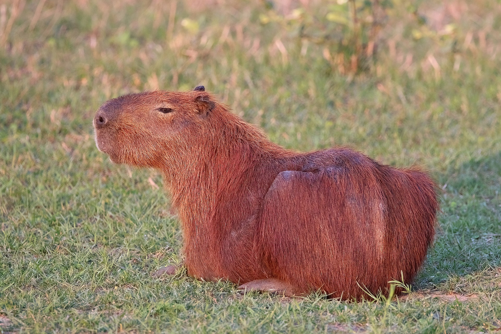

Capybara: Nature's friendliest animal!
 The capybara (Hydrochoerus hydrochaeris) is everyone's best friend. They are large semi-aquatic rodents. They are remarkable animals with a very peaceful disposition. They are famed for getting along with just about everyone. Other animals take advantage of this predisposition and use them as chairs from time to time as you can see in this image.
They do not make great pets as they have very specialized needs. But they have been known to be friendly are native to South America. They are hunted for their hides, meat, and fat.
Here are some more resources about these noble beasts:
Capybara diet habits